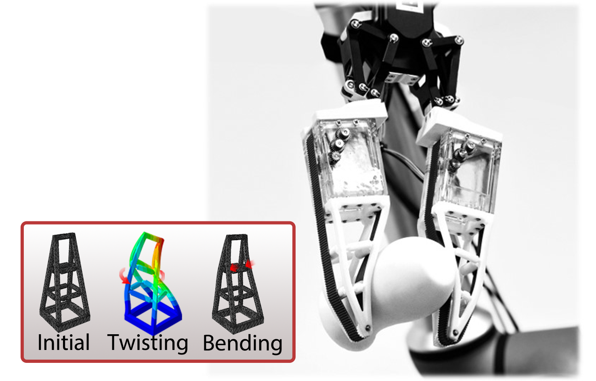

2024 Conference Paper
Active Surface with Passive Omni-Directional Adaptation for In-Hand Manipulation

Abstract
Soft fingers with omni-directional adaptability excel in 3D twisting, outperforming two-dimensional self-adaptive hands using a finger rotation mechanism to achieve similar adaptability. In this study, we present the design of a soft robotic finger with an active surface on an omni-adaptive structure, which can be easily installed on existing grippers and achieve stability and dexterity for in-hand manipulation. The system’s active surfaces initially transfer the object from the fingertip segment with less compliance to the middle segment of the finger with superior adaptability. Despite the omni-directional deformation of the finger, in-hand manipulation can still be executed with controlled active surfaces. We characterized the soft finger’s stiffness distribution and simplified models to assess the feasibility of lifting and reorienting a grasped object in a 3D twisting state. A set of experiments on in-hand manipulation was performed with the proposed fingers, demonstrating the dexterity and robustness of the strategy.
Links
BibTeX
Download .bib@inproceedings{Li2024ActiveSPN0,
title = {{Active Surface with Passive Omni-Directional Adaptation for In-Hand Manipulation}},
author = {Sen Li and Fang Wan and Chaoyang Song},
booktitle = {2024 6th International Conference on Reconfigurable Mechanisms and Robots (ReMAR)},
year = {2024},
pages = {627--632},
doi = {10.1109/ReMAR61031.2024.10619925},
url = {https://ieeexplore.ieee.org/document/10619925}
}